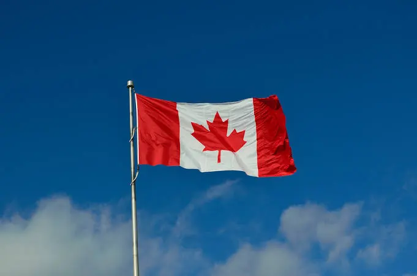
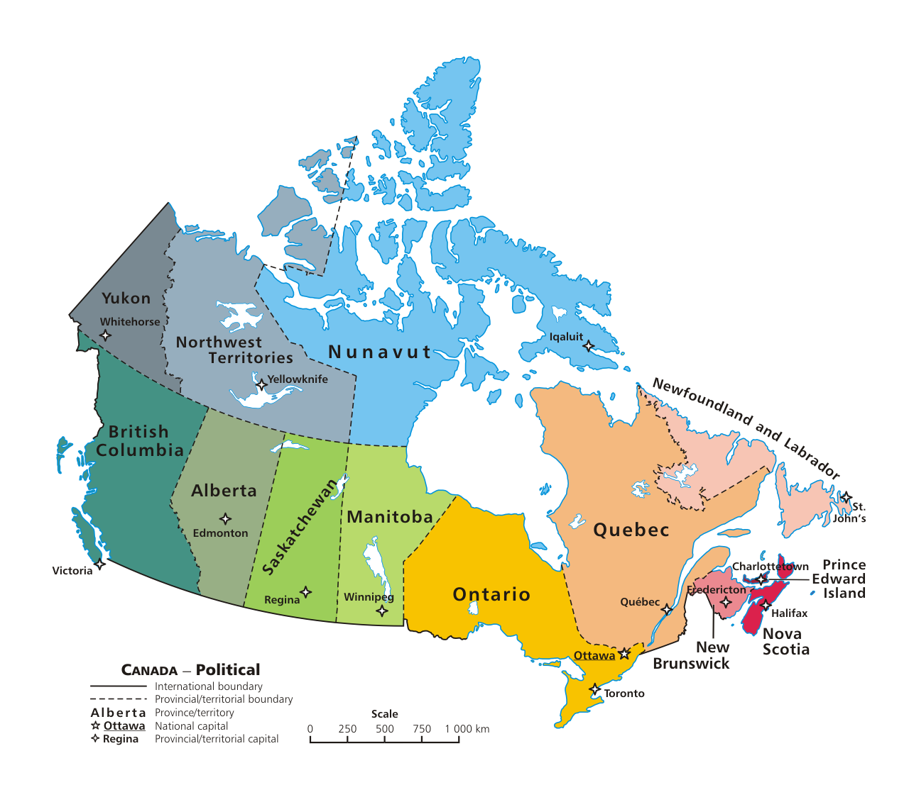
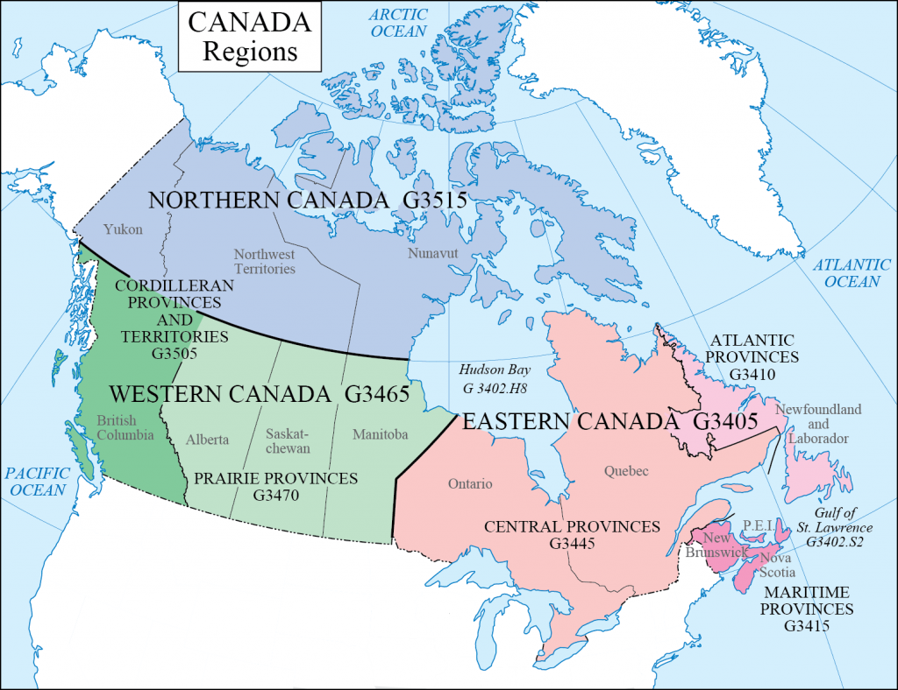
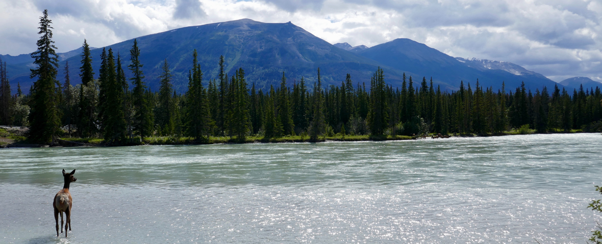

Comprehensive Study Guide & Reference Handout
The largest city in Canada and its main financial, economic, and cultural center.
The national capital of Canada and the center of federal politics and government.
The second-largest city and the cultural heart of French-speaking Canada.
The third-largest metropolitan area and Canada's primary Pacific gateway and shipping port.
The hub of Canada's energy and petroleum industry in the western prairies.
The provincial capital of Alberta and a major northern industrial and government center.


The longest river in Canada (4,241 km), flowing through the Northwest Territories to the Arctic Ocean.
A vital commercial waterway connecting the Great Lakes to the Atlantic Ocean and shaping eastern Canada.
The longest river in British Columbia, essential for salmon fisheries, trade, and the economy of Vancouver.
A historic northern river stretching through Yukon and Alaska.
Borders western Canada (British Columbia), supporting major ports and marine ecosystems.
Borders eastern Canada (Atlantic provinces), rich in maritime history and fisheries.
Borders northern Canada, characterized by polar ice and Arctic archipelagos.
A massive inland saltwater sea in east-central Canada.
A giant chain of freshwater lakes (Superior, Huron, Michigan, Erie, Ontario) shared with the United States.
Located in the Yukon, it is the highest peak in Canada at 5,959 meters.
A major rugged mountain range running through British Columbia and Alberta, famous for peaks like Mount Robson and national parks like Banff and Jasper.
A rugged coastal range along British Columbia running down to the Pacific.
One of the oldest mountain ranges in the world, located in Quebec north of the St. Lawrence River.

Environment: Harsh, treeless Arctic landscape dominated by permafrost.
Vegetation: Low-growing shrubs, mosses, lichens, and wild berries.
Environment: Canada's largest ecosystem, forming a massive continuous green belt across the country.
Vegetation: Dense coniferous trees like spruce, pine, and fir, adapted to long, cold winters.
Environment: A unique, wet maritime eco-zone nestled between the ocean and coast mountains.
Vegetation: Massive, ancient trees including Western Red Cedar, Douglas Fir, and thick mosses.
Environment: Dry, flat inland expanses with hot summers and freezing winters.
Vegetation: Short and tall wild grasses; now largely transformed into Canada's agricultural heartland.
Environment: Fertile lowlands with a humid, four-season climate.
Vegetation: Maple, oak, and birch trees (famed for Canada's iconic autumn colors and maple syrup).
Dominant Language: French (Official province-wide)
Regional Variation: Quebec English (Subtle dialect influenced by French terms and syntax)
Dominant Language: English
Regional Variation: Standard Inland Canadian English (Highly uniform, with a subtle vowel shift in rural Prairies)
Dominant Language: English
Regional Variation: Maritime English (Scottish/Irish roots) and Newfoundland English (Canada's most distinct, isolated dialect)
Dominant Language: English & French (Canada's only officially bilingual province)
Regional Variation: Chiac (A unique blend of Acadian French and English)
Dominant Language: English, French, and Indigenous Languages
Regional Variation: Inuktitut, Cree, and Dene hold official co-status alongside English and French across Yukon, NWT, and Nunavut